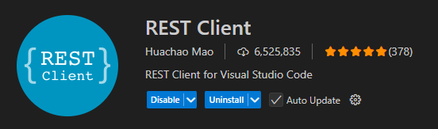
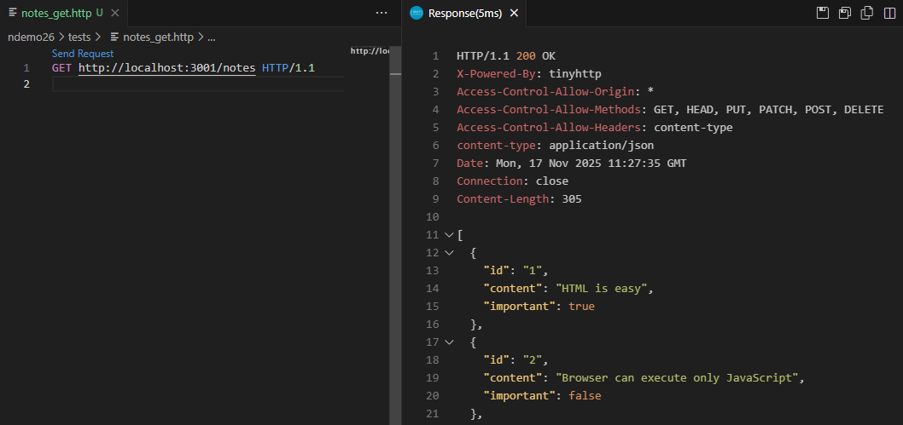

Notes-demo (1/2)
JSON-palvelin
Luo kansio notesdemo ja sen alle kansio jsondb. Luo uusi tiedosto db.json ja kopioi sen sisällöksi notes-taulukko.
Siirry kansioon jsondb ja luo sinne uusi projekti. Asenna json-server mukaan projektille.
cd notesdemo/jsondb npm init npm i json-server --save-dev
Lisää package.json-tiedostoon käynnistyskomento:
"scripts": {
"startdev": "npx json-server --port=3001 --watch db.json"
},
Nyt voit käynnistää json-palvelimen komennolla:
npm run startdev
Tarkista sovelluksen toimivuus http://localhost:3001/notes.
REST-testit tietokannalle
GET
Teemme yksinkertaiset testit tietokannan käsittelemiseksi. Asenna VSCoden lisäosa REST Client jotta voit lähettää editorin kautta HTTP kutsuja JSON-palvelimelle.

Tee oma alikansio testeille (notesdemo / tests). Luo uusi tiedosto notes_get.http ja kopioi sen sisällöksi seuraava HTTP-pyyntö:
GET http://localhost:3001/notes HTTP/1.1
Testaa pyyntöä Send request-painikkeen avulla.

POST
Tiedon lisääminen tapahtuu POST-pyynnön avulla. Tee toinen tiedosto notes_post.http joka sisältää uuden notes-muistiinpanon:
POST http://localhost:3001/notes HTTP/1.1
content-type: application/json
{
"content": "REST-testi",
"date": "2026-01-14T10:00:00.098Z",
"important": false
}
DELETE
Poistaminen saa parametrina poistettavan muistiinpanon id:n.
DELETE http://localhost:3001/notes/1 HTTP/1.1
PUT
Muutettaessa sisältää tulee kertoa id sekä json-tieto uusista tiedoista.
PUT http://localhost:3001/notes/3 HTTP/1.1
content-type: application/json
{
"content": "Päivitetty sisältö",
"date": "2026-01-12T18:00:00.091Z",
"important": false
}